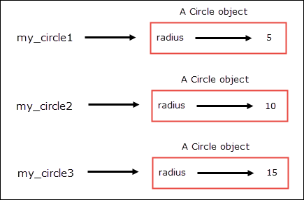

Objects and Classes in Python
Last updated on September 22, 2020
There are two common Programming paradigms in use:
- Procedural Programming.
- Object Oriented Programming.
Procedural Programming #
Procedural programming uses series of steps to tell computer what to do. Procedural programming extensively uses procedures, we can think of procedures as functions which perform a specific tasks, such as calculate the incentive of an employee, save the data to the database, run backup and so on. The central idea behind procedural programming is to create reusable functions to operate on data. There is nothing wrong with this approach, but as the program grows it becomes difficult to manage. All the programs we have written so far were procedural as they extensively rely on procedures/functions to perform various tasks.
Object Oriented Programming #
The Object Oriented Programming revolves around objects instead of procedures. An object is an entity which contains data as well as procedures that operates on the data. The data and procedures inside an object is known as attributes and methods respectively. Before we create objects, we first have to define a class. A class is simply a template where we define attributes and methods. When we define a class, we essentially create a new data type. It is important to note that class is just a blueprint, it does nothing by itself. To use a class we have to create objects that are based upon that class. An object is also known as instance of a class or class instance or just instance. The process of creating object from a class is known as instantiating a class and we can create as many objects as needed.
Defining Class #
The syntax of defining class is as follows:
1 2 3 4 | class class_name(parent_class_name):
<method_1_definition>
...
<method_n_definition>
|
The class definition is divided into two parts: class header and class body.
The class header starts with class keyword followed by the name of the class, followed by the optional parent_class_name inside parentheses. The class_name and parent_class_name can be any valid identifier.
The parent_class_name class refers to the class you want to inherit from. This is known as Inheritance. If you don't specify parent class name while defining a class it will be automatically set to object. We will discuss inheritance in more detail in lesson Inheritance and Polymorphism in Python.
In the next line, we have a class body, this is where we define methods to operate on data. Method definitions must be indented equally indented otherwise you will get a syntax error.
Okay, enough talk ! Let's define a class now.
In the following listing, we are defining a class to represent a Circle. A Circle class defines an attribute named radius and three methods namely __init__(), get_area() and get_perimeter().
python101/Chapter-15/circle.py
1 2 3 4 5 6 7 8 9 10 11 12 | import math
class Circle:
def __init__(self, radius):
self.radius = radius
def get_area(self):
return math.pi * self.radius ** 2
def get_perimeter(self):
return 2 * math.pi * self.radius
|
Let's step through the code line by line:
In line 1, we are importing math module because we will be using its pi constant in our methods.
In line 3, we have a class header, which starts with class keyword followed by class name, which in this case is Circle, followed by a colon (:).
In the next line we have a class body, where we have defined the following three methods:
__init__()method.get_area()method.get_perimeter()method.
The syntax of defining methods is exactly the same as that of functions.
Notice that each method has a first parameter named self. In Python, the self parameter is required for every method. The self parameter refers to the object that invokes that method. Python uses self parameter to know which object to operate on inside the class. While calling the method you don't need to pass any value to self parameter, Python interpreter automatically binds the self parameter to the object when a method is called.
In lines 5-6, we have defined a method named __init__. The __init__() is special method known as initializer or constructor. It is invoked everytime after a new object is created in the memory. The purpose of the initializer method is to create object's attribute with some initial value. Apart from the self parameter, __init__() method expects a radius parameter to provide an initial value to the radius attribute of the Circle object. The object's attribute are also commonly known as instance variables. And the methods which operate on instance variables are known as instance methods. Our Circle class has two instance methods get_perimeter() and get_area(). Each individual object has it's own set of instance variables. These variables stores object's data. The scope of instance variable and keyword self is limited to the body of the class. Inside a class we use self to access object's attributes and methods. For example, we can use self.var to access instance variable named var and self.foo() to invoke the foo() instance method of an object.
Defining constructor method ( i.e __init__() ) is not a requirement, If you don't define then Python automatically supplies an empty empty __init__() method which does nothing.
In line 6, the instance variable self.radius is initialized to the value of the radius variable.
self.radius = radius
In other words, the above line of code creates an attribute named radius with an initial value for the object that was just created.
Unlike instance variable radius (on the left side), the radius variable on the right hand side of assignment operator is a local variable and it's scope is only limited to the __init__() method.
In lines 8 to 9, we have defined get_area() instance method which calculates and returns area of the circle.
In lines 11 to 12, we have defined get_perimeter() instance method which calculates and returns perimeter of the circle.
Notice that inside get_area() and get_perimeter() we are accessing instance variable radius using self.radius instead of just radius.
Now we know how Circle class is defined. Let's create some objects of the Circle class.
Creating Objects #
We can create objects from a class by calling class name as if it was a function:
ClassName()
However, if you have defined __init__() method then you would need to call class name with arguments as follows:
ClassName(arguments)
The arguments must match the parameters in the __init__() method without self. Otherwise, you will get an error.
Here is an example:
my_circle = Circle(5)
The above statement does following things:
- Creates an object of
Circleclass. - Invokes the
__init__()method, passes this newly created Circle object toself, and the other argument (i.e 5) to theradiusvariable. - Creates an attribute named
radiuswith an initial value for the object referenced byself. - returns the
Circleobject - assigns the reference of the
Circleobject to the variablemy_circle.
Note that my_circle only contains a reference (address) to the object, not the actual object.
Accessing Attributes and Methods #
Once we have an object of a class, we can use it to access object's attribute (or instance variable) and methods using the following syntax:
1 2 | object.attribute # syntax to access attributes
object.method(arguments) # syntax to access instance methods
|
Here is how we can access attribute and methods of the Circle object.
python101/Chapter-15/circle_client.py
1 2 3 4 5 6 7 | from circle import *
my_circle = Circle(5)
print("Circle of radius is",my_circle.radius)
print("Area of circle:", format(my_circle.get_area(), ".2f"))
print("Area of perimeter of circle:", format(my_circle.get_perimeter(), ".2f"), end="\n\n")
|
Output:
1 2 3 | Circle of radius is 5
Area of circle: 78.54
Area of perimeter of circle: 31.42
|
Notice that while calling instance methods, we are not passing any value to the self parameter because Python automatically passes reference to the object that was used to call the method to the self parameter. So in this case, the object referenced by the variable my_circle is passed to the self parameter. However, you are not allowed to pass argument to self parameter in your code. If you try to do so you will an error. For example:
python101/Chapter-15/passing_argument_to_self.py
1 2 3 4 5 | from circle import *
my_circle = Circle(5)
my_circle.get_area(my_circle)
my_circle.get_perimeter(my_circle)
|
Output:
1 2 3 4 | Traceback (most recent call last):
File "passing_argument_to_self.py", line 4, in <module>
my_circle.get_area(my_circle)
TypeError: get_area() takes 1 positional argument but 2 were given
|
We can also change object's attribute using the following syntax:
object.attribute = new_val
The following code changes the value of my_circle object's radius attribute from 5 to 10.
my_circle.radius = 10
Finally, we can create as many objects as we want. Each object will have its own set of attributes. Changing attributes for one object will not affect the attributes of other objects. For example:
python101/Chapter-15/multiple_objects.py
1 2 3 4 5 6 7 8 9 10 11 12 13 14 15 16 17 18 19 20 21 22 23 24 25 26 27 28 29 30 31 32 33 | from circle import *
my_circle1 = Circle(5)
my_circle2 = Circle(10)
my_circle3 = Circle(15)
print("Address of Circle objects")
print("my_circle1:", id(my_circle1)) # print the address of Circle object referenced by variable my_circle1
print("my_circle2:", id(my_circle2)) # print the address of Circle object referenced by variable my_circle2
print("my_circle3:", id(my_circle3)) # print the address of Circle object referenced by variable my_circle3
print()
print("Address of radius attribute")
print("my_circle1:", id(my_circle1.radius)) # print the address of my_circle1's radius attribute
print("my_circle2:", id(my_circle2.radius)) # print the address of my_circle2's radius attribute
print("my_circle3:", id(my_circle3.radius), end="\n\n") # print the address of my_circle3's radius attribute
print("Initial value of radius attribute: ")
print("my_circle1's radius:", my_circle1.radius)
print("my_circle2's radius:", my_circle2.radius)
print("my_circle3's radius:", my_circle3.radius, end="\n\n")
# changing radius attribute of circle objects
my_circle1.radius = 50
my_circle2.radius = 100
my_circle3.radius = 150
print("After changing radius attribute of circle objects", end="\n\n")
print("Final value of radius attribute: ")
print("my_circle1's radius:", my_circle1.radius)
print("my_circle2's radius:", my_circle2.radius)
print("my_circle3's radius:", my_circle3.radius)
|
Output:
1 2 3 4 5 6 7 8 9 10 11 12 13 14 15 16 17 18 19 20 21 | Address of Circle objects
my_circle1: 5236440
my_circle2: 5236608
my_circle3: 32036008
Address of radius attribute
my_circle1: 1586284752
my_circle2: 1586284912
my_circle3: 1586285072
Initial value of radius attribute:
my_circle1's radius: 5
my_circle2's radius: 10
my_circle3's radius: 15
After changing radius attribute of circle objects
Final value of radius attribute:
my_circle1's radius: 50
my_circle2's radius: 100
my_circle3's radius: 150
|
The my_circle1, my_circle2 and my_circle3 refers to three different Circle objects stored in distinct memory locations. In addition to that, each object's attribute are also stored in distinct memory locations.

Here is another example which creates a class named BankAccount. Object of this class simulates a bank account which allows users to check balance, make withdrawal and deposit money.
python101/Chapter-15/bank_account.py
1 2 3 4 5 6 7 8 9 10 11 12 13 14 15 16 17 18 19 20 21 22 23 24 25 26 27 28 29 30 31 32 33 | class BankAccount:
def __init__(self, balance):
self.balance = balance
def make_deposit(self, amount):
self.balance += amount
def make_withdrawal(self, amount):
if self.balance < amount:
print("Error: Not enough funds")
else:
print("Successfully withdrawn $", amount, sep="")
self.balance -= amount
def get_balance(self):
return self.balance
my_account = BankAccount(5000) # Create my bank account with $5000
print("Current Balance: $", my_account.get_balance(), sep="")
print("Withdrawing $10000 ...")
my_account.make_withdrawal(10000)
print("Lets try withdrawing $1000 ...")
my_account.make_withdrawal(1000)
print("Now Current Balance: $", my_account.get_balance(), sep="")
print("Depositing $2000 ...")
my_account.make_deposit(2000)
print("Now Current Balance: $", my_account.get_balance(), sep="")
|
Output:
1 2 3 4 5 6 7 8 | Current Balance: $5000
Withdrawing $10000 ...
Error: Not enough funds
Lets try withdrawing $1000 ...
Successfully withdrawn $1000
Now Current Balance: $4000
Depositing $2000 ...
Now Current Balance: $6000
|
Hiding Object's Attributes #
By default, object's attributes are visible outside the class. This is the reason why we were are able to access radius and balance attributes outside of Circle and BankAccount class respectively. Most of the time we don't give access to object's attribute outside of the class because it may result in accidental corruption of attribute's data. As situation stands, both of our programs ( circle.py and bank_account.py ) allows access to object attributes outside of class because of that our programs has following limitations:
The
balanceattribute in theBankAccountobject is very sensitive because it alters the account balance directly. Ideally, we want balanceattributeto change only when someone deposits or withdraw money. As things stand, anybody can increment or decrementbalanceattribute without depositing or withdrawing any money.1 2
my_account = BankAccount(5000) # Initially account is created with $2000 balance my_account.balance = 0 # well now your balance is 0
Mistakes like these would certainly ensure the bankruptcy of the company who is using such a program.
The
radiusattribute of theCircleobject must contain a positive number, but at this point nothing is preventing us to store a string or list in it.1 2
my_circle = Circle(4) my_circle.radius = "www"
We can prevent these problems by restricting access to object's attribute outside of the class and by implementing accessor and mutator methods.
Data Hiding in Python can be achieved by defining private attributes. We can define a private attribute by starting its name with two underscore characters (__). So if we change both self.balance and self.radius to self.__balance and self.__radius respectively, then we will not be able to access radius and balance attributes outside of the class. Similarly, we can define a private method by starting its name with two leading underscores (__). Private attributes and methods can only be accessed inside the class. If you try to access them outside of the class you will get an error.
To make the attribute value accessible outside the class we use accessor methods. An accessor method is a simply a method that returns the value of object's attribute but does not change it. They are also commonly known as getter methods or simply getters and they usually start with the word get. Here is the general format of the accessor method.
1 2 | def get_attributeName(self):
return self.attributeName
|
Similarly, We can have mutator methods. A method which stores the value to object's attribute is known as mutator method. We call mutator method when we need to change or set the value to object'attribute. In addition to setting value to object's attribute, they may also provide additional validation to validate the data before it is assigned to object's attribute. Mutator method is also commonly known as setter methods or setters. Its general format is:
1 2 3 | def set_attributeName(self, newvalue):
## add data validation here
self.attributeName = newvalue
|
Here is a rewrite of Circle class which makes radius attribute private and also implements getter and setter method for the radius attribute.
python101/Chapter-15/improved_circle.py
1 2 3 4 5 6 7 8 9 10 11 12 13 14 15 16 17 18 19 20 21 22 23 24 25 | import math
class Circle:
def __init__(self, radius):
self.__radius = radius #
def get_area(self):
return math.pi * self.__radius ** 2
def get_perimeter(self):
return 2 * math.pi * self.__radius
# getter method for radius attribute
def get_radius(self):
return self.__radius
# setter method for radius attribute
def set_radius(self, radius):
if not isinstance(radius, int):
print("Error: ", radius, "is not an int")
return
self.__radius = radius
|
Notice that the set_radius() method can only accept an integer argument, if you pass data of any other type, it will report an error. Data validation in set_radius() is achieved using isinstance() function. The isinstance() function is used to test the type of the given object. It's syntax is:
isinstance(object, class_name)
The object represent the object we want to test and class_name represent the name of class. If object is an instance of class_name, then isinstance() returns True. Otherwise False.
Now consider the following shell session.
1 2 3 4 5 6 7 8 9 10 11 12 13 14 15 16 17 18 19 20 21 22 23 24 | >>>
>>> from improved_circle import Circle
>>>
>>> c = Circle(6)
>>>
>>> c.__radius
Traceback (most recent call last):
File "<stdin>", line 1, in <module>
AttributeError: 'Circle' object has no attribute '__radius'
>>>
>>> c.get_radius() # get the initial value of __radius attribute
6
>>>
>>> c.set_radius("a radius") # trying to set invalid value
Error: a radius is not an int
>>>
>>> c.get_radius() # value of __radius attribute is still same
6
>>>
>>> c.set_radius(10) # this time operation succeeds
>>>
>>> c.get_radius() # get the new value of __radius attribute
10
>>>
|
In line 6, we are attempting to access the __radius attribute of the Circle object but we get AttributeError error because the __radius attribute is private. To get or set value of the __radius attribute outside of class use get_radius() and set_radius() respectively.
In line 11, we are using get_radius() getter method to access the value of __radius attribute of the Circle object.
In line 14, we are trying to set an invalid value to the __radius attribute using set_radius() method, that's why we get an error.
In line 20, we are again trying to set value to the __radius attribute using set_radius() method but this time the operation succeeds.
Passing Objects as Arguments to Function #
Just like built-in objects, we can pass objects of user-defined classes to a function or method.
The following program shows how you can pass an object of type Circle to a function named print_circle_info().
python101/Chapter-15/objects_as_arguments.py
1 2 3 4 5 6 7 8 9 10 11 12 13 14 15 | from improved_circle import Circle
c1 = Circle(5.4)
c2 = Circle(10.5)
def print_circle_info(circle_obj):
print("#########################")
print("Radius of circle", format(circle_obj.get_radius(), "0.2f"))
print("Perimeter of circle", format(circle_obj.get_perimeter(), "0.2f"))
print("Area of circle", format(circle_obj.get_area(), "0.2f"))
print("#########################", end="\n\n")
print_circle_info(c1) # passing circle object c1 to print_circle_info()
print_circle_info(c2) # passing circle object c2 to print_circle_info()
|
Output:
1 2 3 4 5 6 7 8 9 10 11 | #########################
Radius of circle 5.40
Perimeter of circle 33.93
Area of circle 91.61
#########################
#########################
Radius of circle 10.50
Perimeter of circle 65.97
Area of circle 346.36
#########################
|
Load Comments